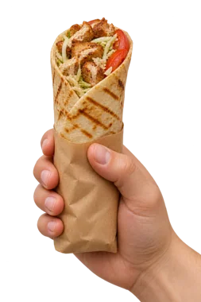
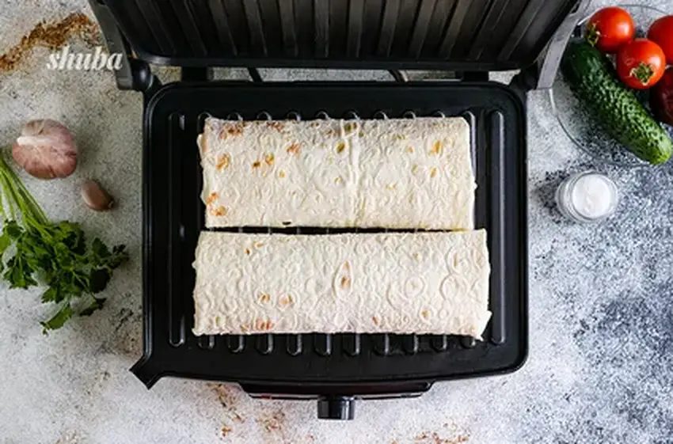
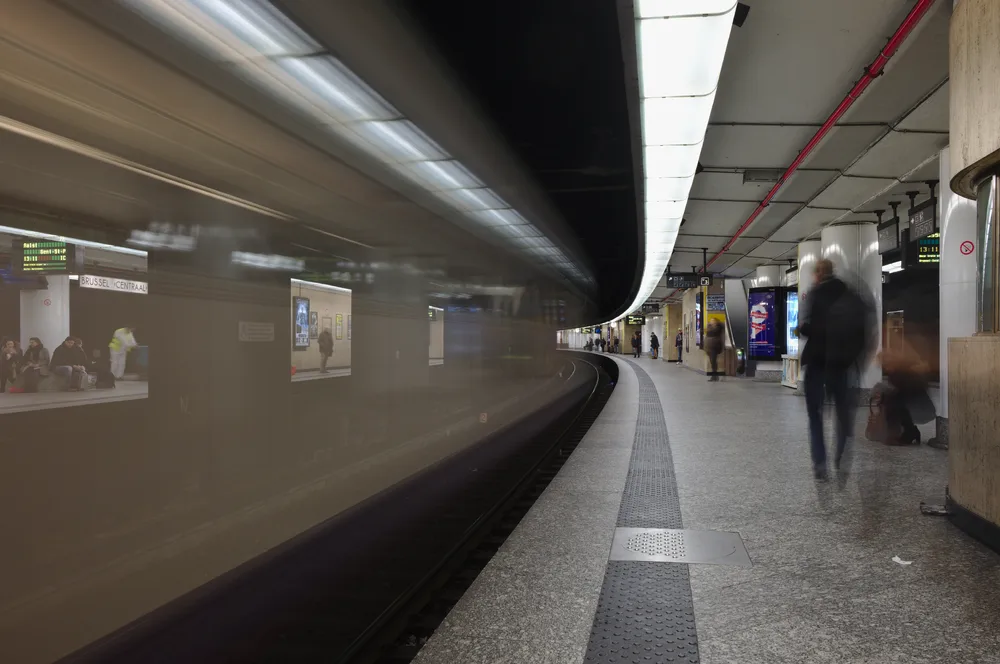

First, the chicken
We grill the marinated chicken, then layer it with fresh vegetables and sauce on thin lavash.
House sauces and thin lavash, toasted on the grill.
A taste of Ukraine in the heart of Brussels.

Grilled chicken, cabbage, tomato, cucumber and garlic yoghurt sauce in wheat lavash.

Twice the grilled chicken, with the same fresh vegetables and garlic yoghurt sauce.

Our classic chicken, vegetable and garlic yoghurt filling in a smaller wrap.

Falafel, hummus with tahini, cabbage, cucumber, tomato and herbs. Milk- and egg-free lavash.
On the train or on the way home. Easy to hold in one hand. The foil helps keep the wrap warm on the journey home.
We grill the marinated chicken, then layer it with fresh vegetables and sauce on thin lavash.
A brief press on the contact grill toasts the lavash while keeping the filling juicy.
We wrap each hot portion in foil and hand it over, ready to go.

Passengers see the sign and a photo of the shawarma before they reach the counter.
One menu shows all four options, their prices, portion sizes and fillings.
Foil and an outer sleeve keep one hand free for a suitcase.


We already work in Belgian hospitality. Our daily standards are attentive service, consistent food quality and a clean kitchen.
Hands-on experience in a restaurant kitchen and in organising daily service.
We helped launch the restaurant, from buying equipment and setting up suppliers to developing the menu.
In Ukraine, we spent years serving customers near metro stations. We designed this format for passengers with just minutes before departure.
We marinate our chicken, make our sauces and toast each wrap. The Mini suits a quick snack and the Double makes a hearty lunch.
We chose a contact grill to limit cooking odours. We plan separate areas for raw and cooked ingredients and regular cleaning throughout each shift.
Hot Ukrainian shawarma adds another option alongside Belgian sandwiches, burgers, waffles and pastries.

We receive deliveries, check stock and prepare the vegetables and workstations.
Staff share order-taking, grilling and handover duties. We plan menus in French and Dutch, with service also available in English.
We clean the grill and work surfaces, check remaining stock and place orders for the next shift.


A short menu makes peak-time ordering easier. Familiar flavours and dependable service give commuters a reason to return.
A minimalist frontage with neon signage and wood accents. Materials and lighting will be agreed with SNCB.
We commit to all agreed opening hours, to caring for station property and to keeping the passenger walkway clear.
We will check electrical capacity, ventilation, water and drainage before agreeing the frontage and preparing a cost estimate.
We will install the contact grill, refrigerators and sinks. The team will practise preparation, handover and peak-time service.
Our initial target is three to six weeks after handover. We will agree a date with SNCB after the site visit and confirmation of the works.